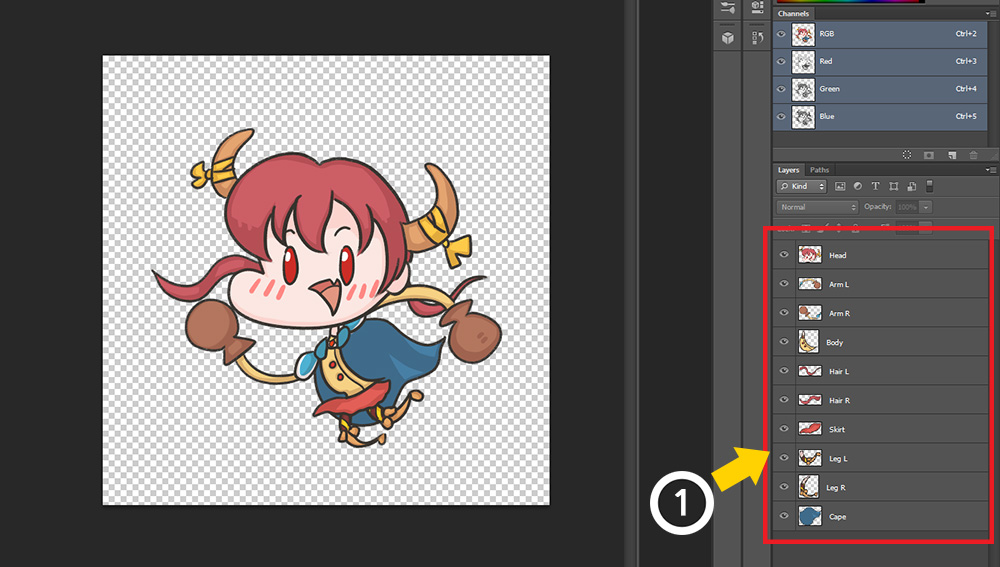
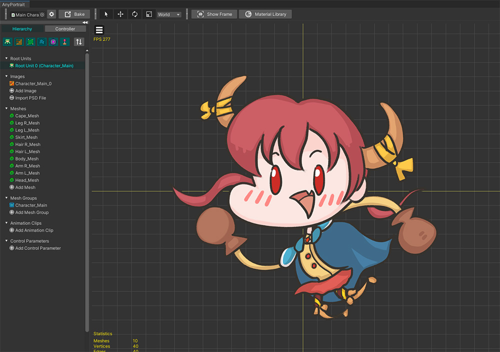
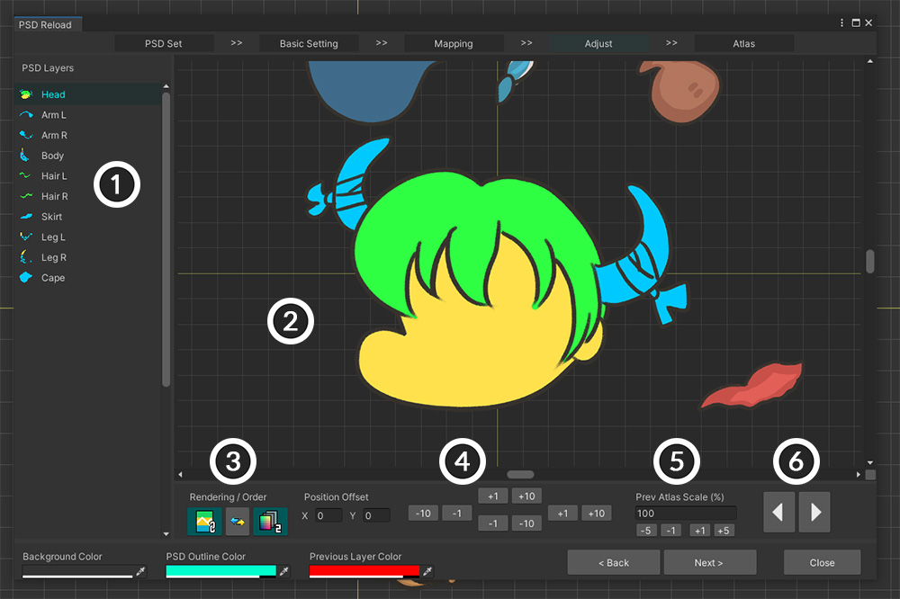
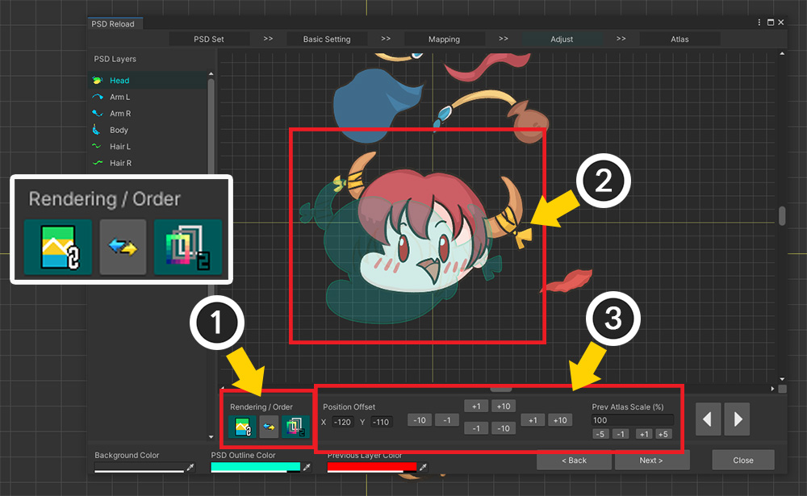
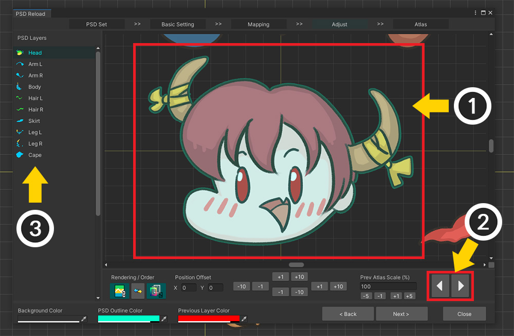
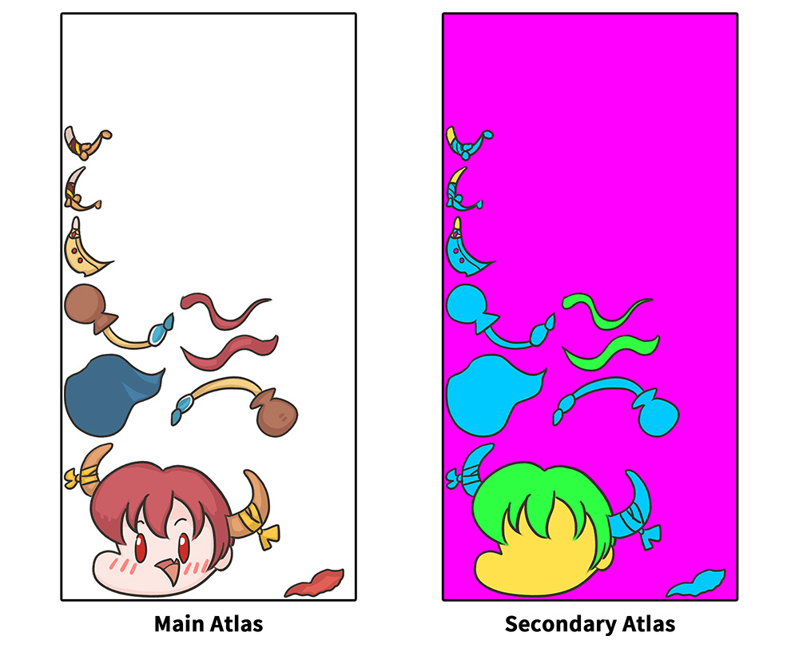
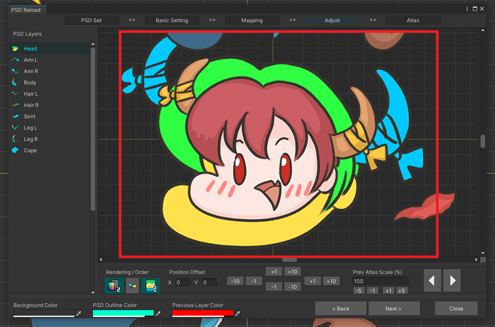
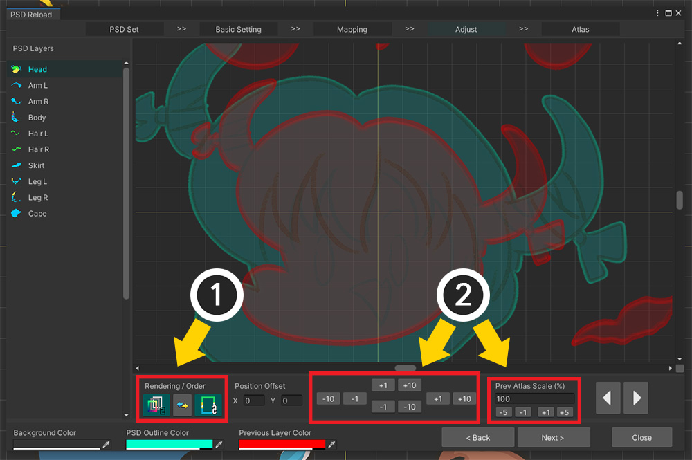
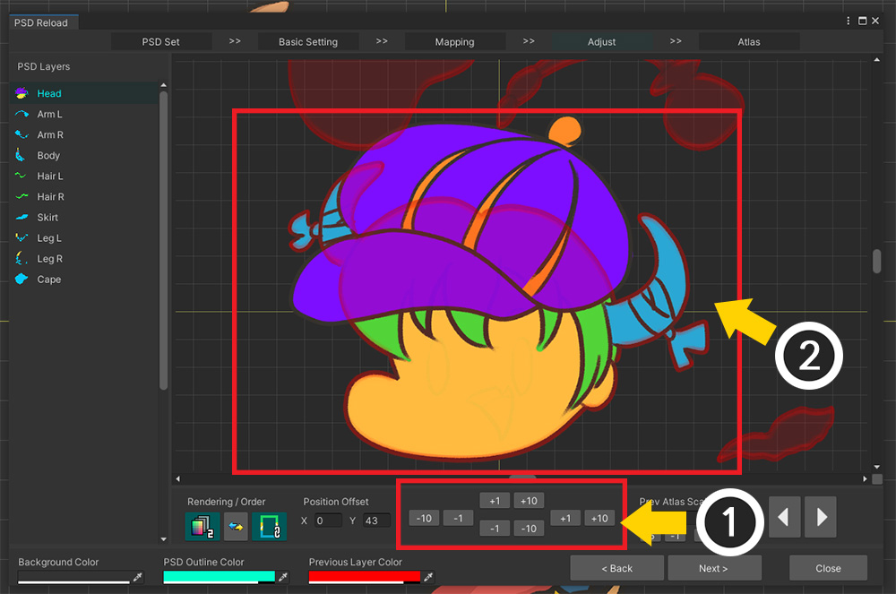
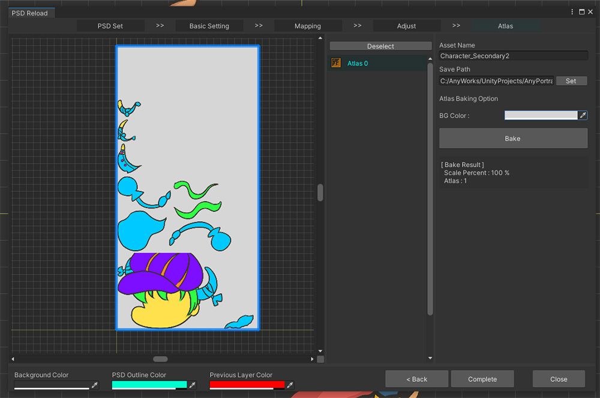

AnyPortrait > Manual > Creating Secondary Atlas
Creating Secondary Atlas
1.4.0

In addition to the basic textures, various types of textures are often required to render game characters.
Material physical properties, bumps, masks, and special effects are often applied to textures and used for rendering.
Alternatively, you can change the appearance of your character by replacing the texture. (Related Page)
These textures are called Secondary Textures.
In particular, there are many cases of creating a Secondary Atlas in which several layers are combined into one texture.
In this case, the condition "All textures will have the same Atlas structure" must be satisfied.
Using the "Create Secondary Atlas" function, which is a new function added in AnyPortrait v1.4.0, it is possible to conveniently create Atlas textures with the same structure from other PSD files.
This function has been added to the "Re-import PSD file" dialog, so you need to know the function to use it properly.
Please read the following manuals before explanation.
- Importing a PSD File
- Re-importing a PSD File
Note
This feature is not backwards compatible with versions prior to v1.4.0.
If you created Atlas by importing a PSD from a previous version, you must use the "Re-import PSD File" function to generate Atlas data for the current version.
Creating Secondary Atlas


For explanation, we prepared a PSD file that will be the original and a PSD file that will be a secondary texture.
Both PSD files have the same name and composition of layers.
In order to create a Secondary Atlas, it should have the same or layered composition as possible as the base PSD file.
Of course, it is possible to create a texture even if it is not exactly the same through the mapping function afterward, but it is recommended to prepare a file with the same layer name.

In order to create a Secondary Atlas, the Main Atlas, which is the basis, must first be created.
(1) Use the Import PSD File function to (2) create Main Atlas.

A character created from a PSD file.
Now let's create a Secondary Atlas that is compatible with this character's UV information.

(1) Click the Import PSD File button.
(2) Click the Reload PSD File button.

When the dialog opens, "PSD Set" created while creating Main Atlas is registered.
(1) Select the PSD Set.
(2) You can check information related to Main Atlas.
(3) Click the Make Secondary PSD Set button.
If you can't see the PSD Set or you can't make a Secondary PSD Set
If you imported your PSD file from a version earlier than v1.4.0, you will not be able to perform this process.
The solution is to re-import the same PSD file as is and recreate the Main Atlas.
For instructions on how to re-import the same PSD file, see the Related Page.

"Secondary PSD Set" that creates an Atlas using information from the selected PSD Set has been created and added to the list.
(1) Select Secondary PSD Set.
(2) Open the Second PSD file to be created as Secondary Atlas. (Be careful, don't select the first PSD file used in Main Atlas!)
(3) PSD file information and previous bake information are displayed. Currently, we have never created a Secondary Atlas, so we don't have any Bake information.
(4) Click the Next button.

(1) Images with the original Atlas are displayed.
(2) The record of the previous Bake appears.
(3) Selected original Atlas image and Secondary PSD file are displayed at the same time.
(4) These buttons determine how the PSD file or image will be displayed on the screen.
(5) After confirming that all files are loaded properly, click the Next button.

This is the step to connect the Secondary PSD file layer and the Main Atlas original layer.
1. Secondary PSD file layers : You can set whether to bake and which original layer to refer to.
2. Main Atlas layers : The original layers are displayed based on the data stored in the original PSD set.
3. Auto Mapping : Automatically link layers based on name and order.
4. Enable All / Disable All / Reset : Changes whether to bake or refer to the original for all Secondary PSD set layers.
5. Show connection status with color : Shows the connection status of both sides easily by using color.
6. Preview with outline: When this function is turned on, the object selected on the preview screen is rendered as an outline.
7. Preview screen : Outputs the original Atlas linked to the image of the selected PSD layer.

By default, they are automatically linked based on their name.
However, if the connection is wrong, you have to manually re-establish the connection between the layers.
(1) Click the Connect button of the layer of the secondary PSD file whose connection you want to change.
(2) Select the target you want to connect to.
After setting whether to connect or bake, (3) Click the Next button to proceed to the next step.

This step is cumbersome, but very important.
This is because we need to correct the position and size of each layer to make them share the same UV.
This screen is structured as follows.
1. Layers in Secondary PSD File : These are the PSD layers as target of Bake.
2. Preview screen : The selected layer and the original layer are output. You will need to calibrate the position and size while looking at this screen. You can move, zoom, etc. by clicking and dragging the mouse wheel.
3. Rendering / Order : Change the rendering method and output order on the preview screen.
4. Position Offset : Tools to change the position of the selected Secondary PSD layer.
5. Prev Atlas Scale : The size value that should be set in the current PSD file relative to the original Atlas. It is set on a per-file basis, so it is applied to all layers at once.
6. Layer switch button : Selects the previous or next layer.

When you select a layer, if the positions don't overlap as above, you won't have the same UVs when made with Atlas.
You need to calibrate the position and size to make them perfectly overlap each other.

(1) In the preview screen, change the rendering method to make the outline visible or change the order to prepare for convenient work.
(2) The current original Atlas is shown from the back, and the Secondary PSD layer is shown with a blue outline in the front.
(3) Now, using the Position and Size correction tools, let's make the two layer images perfectly overlap.

(1) The two layers are perfectly overlapped. In this state, you should be able to create Secondary Atlas without any problems.
(2) Click the Previous/Next button or (3) Select the Secondary PSD layer to work on from the Layer List.

When you have finished “overlapping” for all layers, (1) Click the Next button to move on to the last step.

Finally, this is the stage to create a texture asset using Secondary Atlas information.
Unlike other UIs that import PSD files, most of the options related to Bake do not exist.
Since the information from the original PSD set is used as it is, the number, size, and margin of textures are not set.
(1) Set Secondary texture asset name and Path to be saved. (It must be located within a subfolder of Assets.)
(2) Let's press the Bake button.

Secondary Atlas is complete.
You can see that it is configured the same as Main Atlas.

Secondary Atlas should have a different background color depending on how it is used.
(For example, the background of the normal map is light blue and the background of the mask map is black.)
(1) Select BG Color and select the appropriate color. Alpha is also specified.
(2) Press the Bake button again.

The result is applied even to the background color.

(1) Click the Complete button to create a texture file.
(2) When the operation is completed, the result dialog appears. Press the Okay button.

Secondary Atlas is created only as Texture Asset and is not registered in AnyPortait editor.
Let's check the finished asset in the Project tab of the Unity editor.
(1) You can find the Secondary Atlas texture asset created in the set path. It may be automatically selected.
(2) Comparing the two texture assets, you can see that they have the exact same Atlas structure.

This is the completed Secondary Atlas.
Let's create various rendering results with UV compatible textures!
When the original PSD Set is modified
If, after creating the Secondary PSD set, you select the original PSD set and create Atlas again, all Secondary PSD sets created from the PSD set cannot be used.
You need to delete the existing Secondary PSD set, create a new Secondary PSD set, and perform all the above steps again.
If the PSD images have different sizes

If the image of the secondary PSD file to be imported is different from the original PSD file, the size correction should be done more carefully.

The image above is a screen of the position and size correction steps by performing the same process for creating the secondary PSD set described above.
You can see that the image in the Secondary PSD layer is larger than the layer image in the original Atlas.

(1) Change the settings of the preview screen for convenient operation.
(2) Use the position correction tool as well as the size correction tool to make the two images perfectly overlap.

You will need to adjust the size and position as above to make the images overlap.
The size of the image is applied equally to all layers, so if you resize it only once, you will only need to correct the position of the other layers.

Although the PSD files were different in size, the Secondary Atlas, which was properly sized and completed, was created with the same composition.
If the shape of the image is changed

Secondary Atlas will be mainly used for special rendering using color information.
However, if you create a texture for the purpose of "replacing a character's clothes", the shape of some layers may change completely as above.
However, it is likely that this will not generate Atlas properly.
In particular, if the size of the Secondary texture image is larger than the size of the original image, the image may be cropped.

This is the screen where the Secondary PSD Set was created using a PSD file with the image of the “Head” layer changed.

All structures and sizes are the same except that the shape of one image is changed.

As the shape of the "Head" image changed, it became necessary to correct the position.
As above, we tried to correct the position so that the common parts between the images overlap.
Except for the hat part, you can see the rest of the images overlap.

However, when we bake Atlas, we can see that part of the "Head" image is cropped.

Because the area corresponding to "Head" in Main Atlas was not large enough, the layer was cropped in Secondary Atlas.
As such, if the shape of the replaced images can be changed, you should set a sufficiently large margin in advance to match the expected image size when creating the Main Atlas.